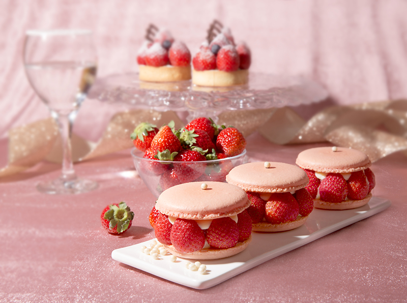
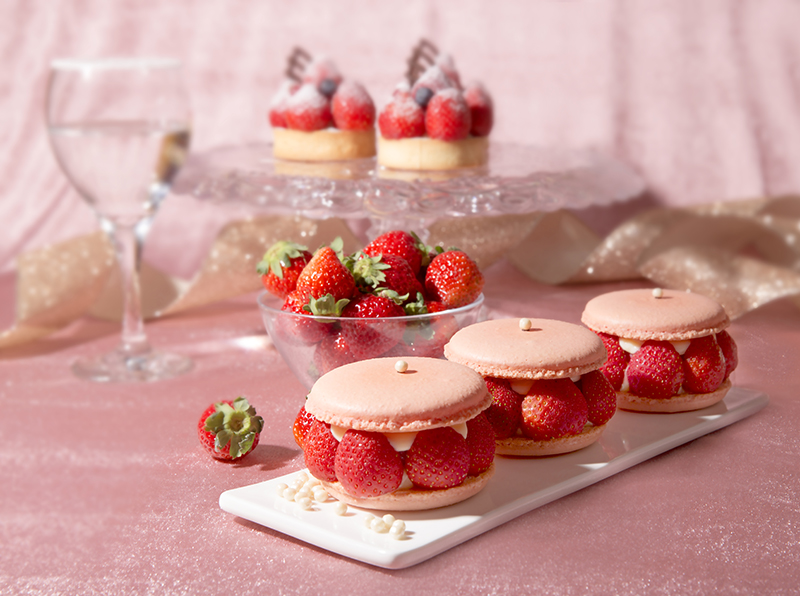
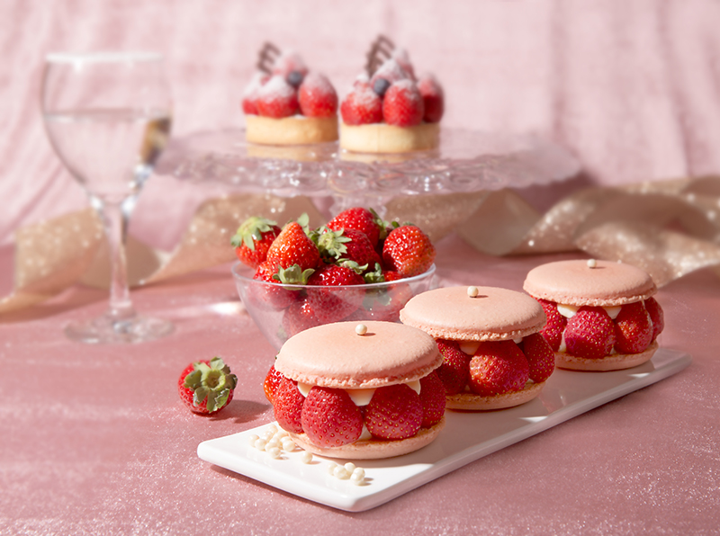

美食地圖
梁語婕歷年作品集
作品集


 

個人簡歷
| 姓名 | 梁語婕 |
|---|---|
| 學歷 | 國立聯合大學 |
| 科系 | 財金系 |
| 現職 | 在校生 |
| 聯絡方式 | Gmail:a0955695309@gmail.com |
菜單
這個網頁會收集及累積各種甜點和飲品，作為開店之前的菜單事前分析
將會持續進行更新，若大家有推薦的甜點或者喜歡的甜點，都歡迎大家跟我分享唷
菜單目錄
- 口袋甜點
- 菜單甜點
- 菜單飲品
- 口袋飲品
- 分析
大家好，我是梁語婕，就讀財金專業
夢想是未來開一家自己的甜點店，所以到處嘗試各種好吃的甜點。
我不會自己做所以我都吃別人的，打算把好吃的甜點收錄起來，叫師父學習。
所以目前在收集好吃的甜點清單
以下有分為已經嘗試過並且入選為將來的菜單甜點
還有期待不久的將來，存到足夠的金錢之後可以實現的口袋甜點
梁語婕歷年作品集

| 姓名 | 梁語婕 |
|---|---|
| 學歷 | 國立聯合大學 |
| 科系 | 財金系 |
| 現職 | 在校生 |
| 聯絡方式 | Gmail:a0955695309@gmail.com |
這個網頁會收集及累積各種甜點和飲品，作為開店之前的菜單事前分析
將會持續進行更新，若大家有推薦的甜點或者喜歡的甜點，都歡迎大家跟我分享唷